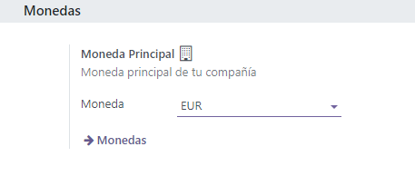
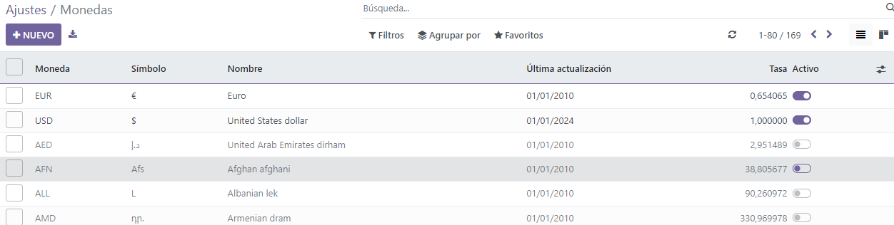
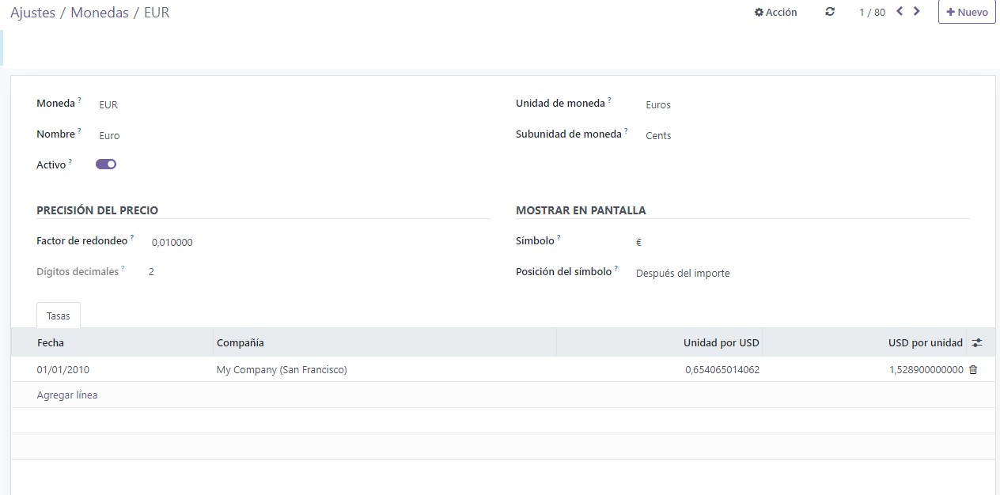
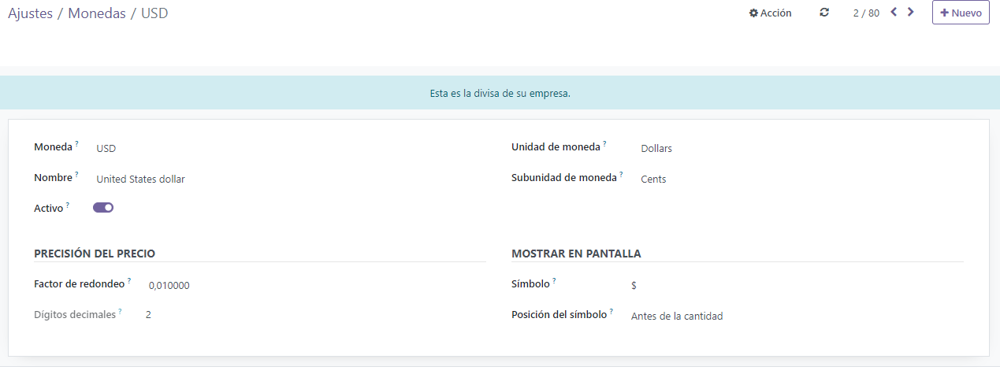
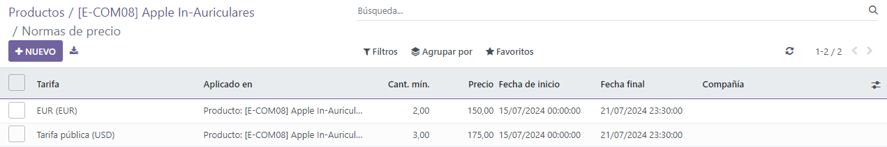

Divisas extranjeras¶
Con Odoo, puede usar las listas de precios para gestionar sus precios en varias divisas extranjeras. Odoo le permite trabajar con un total de 167 divisas.
Nota
Para utilizar varias divisas en la aplicación Ventas de Odoo también debe tener instalada la aplicación Contabilidad.
Ajustes¶
Una vez que haya instalado la aplicación Contabilidad podrá agregar divisas extranjeras a la base de datos. Vaya a la , diríjase a la sección de Divisas y busque la función Divisa principal.
De forma automática, Odoo establece la divisa principal como la moneda del país en el que se encuentra la empresa.
Para cambiar la divisa principal de la empresa, vaya al menú desplegable del campo Divisa, elija la divisa correspondiente y asegúrese de guardar los cambios.
Nota
Todos los métodos de pago deben estar en la misma divisa que el diario de ventas o la de la empresa, si no está configurada. Si no es la misma, aparecerá un mensaje de error de validación.
Ver, editar y agregar divisas¶
Para revisar, editar y agregar divisas a la base de datos y que estén disponibles en las listas de precios y como opción en el menú desplegable de Divisa principal, haga clic en el enlace Divisas. Este enlace se encuentra abajo del campo Divisa en la .
Al hacer clic en el enlace Divisas se abre una página separada con la sección Divisas.
En esta página aparece la lista maestra de Odoo que incluye 167 monedas globales. Cada fila incluye la divisa correspondiente, el símbolo, el nombre, la fecha de la última actualización y la tasa actual (en comparación con la divisa predeterminada del país en el que se encuentra la empresa).
En la parte derecha hay dos columnas que puede activar o desactivar:
Usar en eBay: puede usar esta divisa con la cuenta de eBay conectada (si es necesario).
Activo: esta divisa está activada, así que puede agregarla a una lista de precios o utilizarla como la divisa principal de la empresa si así lo desea. Puede configurarlas desde la .
Nota
Todas las opciones de divisa activas están disponibles de forma predeterminada en la parte superior de la lista.
Truco
Le recomendamos crear al menos una lista de precios por cada divisa activa. Consulte Listas de precios, descuentos y fórmulas para obtener más información sobre la configuración de las listas de precios.
Para activar o desactivar opciones, haga clic en el interruptor en la columna correspondiente. El color del interruptor es verde cuando la divisa está activa, pero es gris si está desactivada.
Formulario de detalles de la divisa¶
Para editar cualquier divisa en la página de Divisas, haga clic en la divisa correspondiente. Esto abrirá su formulario de detalles y podrá realizar las modificaciones necesarias.
El código de la divisa aparece en el campo Divisa en el formulario de detalles y abajo aparece su nombre en el campo Nombre.
Luego, cambie la disponibilidad de la divisa con el interruptor Activo. Si la divisa está activa, el interruptor aparece de color verde y si está inactiva, el color del interruptor es gris.
Del lado derecho del formulario de detalles de la divisa se encuentra la unidad de divisa correspondiente (por ejemplo, dólares) y también la subunidad de divisa (por ejemplo, centavos).
Si la divisa se usará en eBay, cambie la opción Usar en eBay según sea necesario.
En la pestaña Tasas puede ver, agregar o eliminar varias tasas de conversión. Cada fila muestra la fecha de esa tasa específica, la empresa a la que está relacionada, seguida por la unidad por… y … por unidad.
Nota
Los puntos suspensivos (…) en las dos últimas columnas representan la divisa principal establecida para la empresa. Por ejemplo, si la divisa principal son los USD, entonces las columnas se titulan Unidad por USD y USD por unidad.
Para agregar una nueva tasa, haga clic en Agregar una línea en la pestaña Tasas y luego complete la información necesaria en las columnas que se mencionan arriba.
Formulario de detalles de la divisa principal¶
Si la divisa que seleccionó es la divisa principal de la empresa, aparecerá el texto «Esta es la divisa de su empresa» en un recuadro azul en la parte superior del formulario de detalles.
Todos los campos son iguales a los que puede encontrar en los formularios de detalles de otras divisas, pero la pestaña Tasas no estará disponible porque todas las demás tasas de cambio de moneda se basan en la moneda principal de la empresa.
Crear una nueva divisa¶
Si la divisa que desea utilizar no está en la página Divisas, entonces haga clic en el botón Nuevo para abrir un formulario de plantilla de divisas en blanco.
Truco
El botón Nuevo se ubica en la esquina superior derecha de cualquier formulario de detalles de divisa.
Complete el formulario de detalles de divisa. Escriba el código de la divisa correspondiente en el campo Divisa. Debajo de eso, escriba el nombre de la divisa en el campo Nombre.
Cambie la disponibilidad de la divisa con el interruptor Activo.
Del lado derecho del formulario de detalles de la divisa escriba la unidad de divisa correspondiente (por ejemplo, dólares) y también la subunidad de divisa (por ejemplo, centavos).
Abra la pestaña Tasas y agregue una nueva, haga clic en Agregar una línea. Confirme y ajuste los campos Fecha, Empresa, Unidad por… y … por unidad para garantizar que toda la información que se completó de forma automática sea correcta.
Nota
Los puntos suspensivos (…) en las dos últimas columnas representan la divisa principal establecida para la empresa. Por ejemplo, si la divisa principal son los USD, entonces las columnas se titulan Unidad por USD y USD por unidad.
Listas de precios específicas para cada divisa¶
Le recomendamos crear al menos una lista de precios por cada divisa activa en la base de datos. Para crear (o asignar) una lista de precios a una divisa en específico, vaya a la .
En la página de Listas de precios, seleccione una lista existente para editarla o haga clic en Nuevo para crear una nueva lista de precios.
En el formulario de detalles de la lista de precios, ya sea una lista de precios nueva o una existente, ajuste el campo Divisa según sea necesario.
Ver también
Consulte Listas de precios, descuentos y fórmulas para obtener más información relacionada con la configuración de las listas de precios.
Conversión automática del precio público¶
Es importante destacar que el precio público que aparece en los productos está directamente relacionado con la divisa principal que la empresa tiene configurada. Vaya a la .
El precio de venta se actualiza de forma automática si cambia la lista de precios a otra que tenga una divisa distinta a la divisa principal de la empresa. El cambio en el precio está directamente relacionado con la tasa de cambio actualizada para esa divisa.
Establecer precios a los productos¶
Para establecer precios a los productos y evitar que se modifiquen con las tasas de cambio, vaya a la .
En la página de Productos, seleccione el producto que desea modificar o cree uno nuevo con el botón Nuevo.
En el formulario de detalles del producto, haga clic en el botón inteligente Precios adicionales que está ubicado en la esquina superior izquierda. Al realizar esta acción, aparecerá una página separada de Reglas de precio y es específica para ese producto en particular.
Haga clic en Nuevo y seleccione una de las listas de precios del menú desplegable en la columna Lista de precios.
El campo Aplicado en se completa en automático con el producto, así que solo debe ingresar las cifras correspondientes en los campos Cantidad mínima y Precio.
Nota
El número en el campo Cantidad mínima indica que el precio establecido se activará solo si se compra al menos esa cantidad del producto.
Si es necesario, configure una fecha de inicio y una fecha de finalización para los precios establecidos. Si deja esos campos en blanco, entonces el precio que establezca será válido sin importar la fecha de la venta.
Si trabaja en un entorno multiempresas debe seleccionar a qué empresa se debe aplicar esta regla de precios en el campo Empresa. Si deja este campo vacío, la regla de precios se aplicará a todas las empresas de la base de datos.
Una vez que termine de realizar estas configuraciones, cada que las listas de precios designadas se apliquen a un cliente que intente adquirir este producto en específico, entonces aparecerán los precios establecidos sin verse afectados por cualquier cambio o actualización en las tasas de conversión.
Ver también